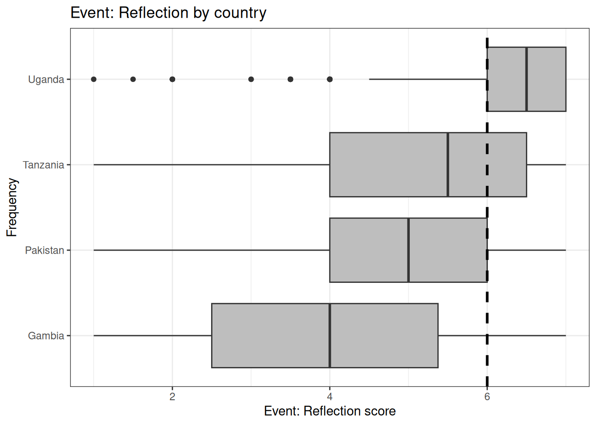
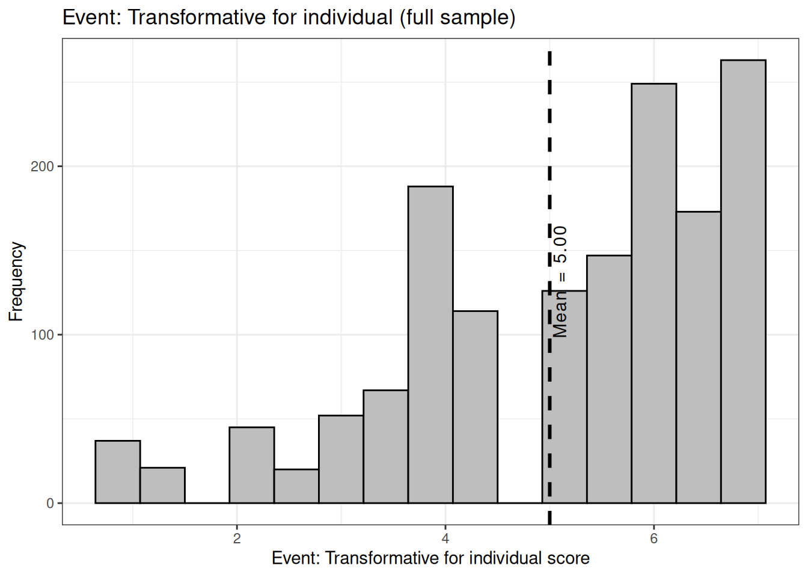

options(digits =2)rm(list=ls())## Install "pacman" package if not installed# (remove the # symbol from the line below):# install.packages("pacman")## Load R packages:pacman::p_load(data.table, tidyverse, haven, labelled, vtable, psych, scales, weights, clipr, forcats, stargazer, ggthemes, ggcharts, geomtextpath, corrplot, tm, readxl, patchwork, modelsummary, gt, lme4, car, lmerTest, ggeffects, magrittr, broom, broom.mixed, backports, effects, interactions, plyr, sjPlot)## Import datasets:## These are newer datasets with new variables created in the individual analyses:dsgmb <-fread("/home/gagan/Desktop/oxford/data/cleanedds/dsgmb.csv")dsgmb$Country <-"Gambia"dsgmb$id <-1:nrow(dsgmb)dsgmb$ID <-paste0("GMB",dsgmb$id)dspak <-fread("/home/gagan/Desktop/oxford/data/cleanedds/dspak.csv")dspak$Country <-"Pakistan"dspak$id <-1:nrow(dspak)dspak$ID <-paste0("PAK",dspak$id)dstza <-fread("/home/gagan/Desktop/oxford/data/cleanedds/dstza.csv")dstza$Country <-"Tanzania"dstza$id <-1:nrow(dstza)dstza$ID <-paste0("TZA",dstza$id)dsuga <-fread("/home/gagan/Desktop/oxford/data/cleanedds/dsuga.csv")dsuga$Country <-"Uganda"dsuga$id <-1:nrow(dsuga)dsuga$ID <-paste0("UGA",dsuga$id)## Correct asterisk pattern for stargazer tables:starpattern <-"<em>*p<0.05; **p<0.01; ***p<0.001</em>"## List of variables to retain from all datasets:list1 <-c("ID", "Country", "age", "gender", "ses", "jobnature", "religion", "married","IGF01", "IGF02", "IGF03", "IGI01", "IGI02", "IGI03", "OGF01", "OGF02", "OGF03", "OGI01", "OGI02", "OGI03","ENDBCL01", "ENDBCL02", "ENDBCL03", "ENDBBL01", "ENDBBL02", "ENDBBL03","EXPBCL01", "EXPBCL02", "EXPBCL03", "EXPBBL01", "EXPBBL02", "EXPBBL03", "empathic_concern_01", "empathic_concern_02", "empathic_concern_03","perspective_taking_01", "perspective_taking_02", "perspective_taking_03", "perspective_taking_04", "history_discrimination","og_hostility", "og_cooperation", "fight_outgroup", "imagistic","event_positive_affect", "event_negative_affect", "event_episodic_recall","event_shared_perception", "event_event_reflection", "event_transformative_indiv", "event_transformative_group","freq_positive_contact", "freq_negative_contact", "sprf", "exp_religious_freedom")## Subset datasets to only the columns in the above list:dsgmb1 <- dsgmb[, ..list1]dspak1 <- dspak[, ..list1]dstza1 <- dstza[, ..list1]dsuga1 <- dsuga[, ..list1]## Merged dataset with needed columns onlyds <-rbind(dsgmb1, dspak1, dstza1, dsuga1)## Rename the "Event_" columns with title case:ds01 <- ds[, 1:44]ds02 <- ds[, !(2:44)]colnames(ds02) <- stringr::str_to_title(colnames(ds02))ds02$ID <- ds02$Idds02 <- ds02[, !1]ds <-merge(ds01, ds02, by ="ID")rm(ds01, ds02)
Data cleaning
Criteria:
Survey duration
SD on unrelated scales
Bad open ended responses
Additional criteria:
Missing data in scales
Multiple imputation for missing responses
Variable: Sample size by Country
Display code
tbl01 <-table(ds$Country)## Table of user language by country:tbl01
Gambia Pakistan Tanzania Uganda
232 504 352 500
Display code
## Sample size by country:lp01 <- ds %>%# drop_na(Country) %>%lollipop_chart(x = Country,line_color ="black",point_color ="black")+labs(y ="Frequency",x ="",title ="Sample size by country")+theme_bw()lp01
Variable: Age
Display code
summary(ds$age)
Min. 1st Qu. Median Mean 3rd Qu. Max. NA's
18 26 34 37 45 92 60
Display code
ds %>%drop_na(age)%>%ggplot(aes(x = age))+geom_histogram(color ="black",fill ="gray",bins =50)+geom_textvline(label ="Mean = 37.00", xintercept =37.00, vjust =1.1, lwd =1.05, linetype =2)+labs(x ="Age", y ="Frequency", title ="Age distribution (full sample)")+theme_bw()
Display code
ds %>%drop_na(age)%>%ggplot(aes(x = age))+geom_histogram(color ="black",fill ="gray",bins =50)+labs(x ="Age", y ="Frequency", title ="Age distribution by country")+facet_wrap(~Country, nrow =2)+theme_bw()
Min. 1st Qu. Median Mean 3rd Qu. Max. NA's
1 3 5 4 6 7 75
Display code
ds %>%drop_na(bbl)%>%ggplot(aes(x = bbl))+geom_histogram(color ="black",fill ="gray",bins =25)+geom_textvline(label ="Mean = 4.00", xintercept =4.00, vjust =1.1, lwd =1.05, linetype =2)+labs(x ="Endorsement of BBL score", y ="Frequency", title ="Endorsement of BBL (full sample)")+theme_bw()
Display code
ds %>%drop_na(bbl, Country)%>%ggplot(aes(x = bbl))+geom_histogram(color ="black",fill ="gray",bins =25)+labs(x ="Endorsement of BBL score", y ="Frequency", title ="Endorsement of BBL by country")+facet_wrap(~Country)+theme_bw()
Display code
ds %>%drop_na(bbl)%>%ggplot(aes(x = bbl,y = Country))+geom_boxplot(fill ="grey")+geom_textvline(label =" ", xintercept =4.00, vjust =1.1, lwd =1.05, linetype =2)+labs(x ="Endorsement of BBL score", y ="Frequency", title ="Endorsement of BBL by country")+#facet_wrap(~Country, nrow = 2)+theme_bw()
Variable: Endorsement of Barrier Crossing Leadership (BCL)
Display code
summary(ds$bcl)
Min. 1st Qu. Median Mean 3rd Qu. Max. NA's
1 5 6 6 6 7 71
Display code
ds %>%drop_na(bcl)%>%ggplot(aes(x = bcl))+geom_histogram(color ="black",fill ="gray",bins =25)+geom_textvline(label ="Mean = 6.00", xintercept =6.00, vjust =1.1, lwd =1.05, linetype =2)+labs(x ="Endorsement of BCL score", y ="Frequency", title ="Endorsement of BCL (full sample)")+theme_bw()
Display code
ds %>%drop_na(bcl, Country)%>%ggplot(aes(x = bcl))+geom_histogram(color ="black",fill ="gray",bins =25)+labs(x ="Endorsement of BCL score", y ="Frequency", title ="Endorsement of BCL by country")+facet_wrap(~Country)+theme_bw()
Display code
ds %>%drop_na(bcl)%>%ggplot(aes(x = bcl,y = Country))+geom_boxplot(fill ="grey")+geom_textvline(label =" ", xintercept =6.00, vjust =1.1, lwd =1.05, linetype =2)+labs(x ="Endorsement of BCL score", y ="Frequency", title ="Endorsement of BCL by country")+#facet_wrap(~Country, nrow = 2)+theme_bw()
ds %>%drop_na(perspective_taking, Country)%>%ggplot(aes(x = perspective_taking))+geom_histogram(color ="black",fill ="gray",bins =25)+labs(x ="Perspective taking score", y ="Frequency", title ="Perspective taking by country")+facet_wrap(~Country)+theme_bw()
Display code
ds %>%drop_na(perspective_taking)%>%ggplot(aes(x = perspective_taking,y = Country))+geom_boxplot(fill ="grey")+geom_textvline(label =" ", xintercept =6.00, vjust =1.1, lwd =1.05, linetype =2)+labs(x ="Perspective taking score", y ="Frequency", title ="Perspective taking by country")+#facet_wrap(~Country, nrow = 2)+theme_bw()
Variable: Perceived history of discrimination
Display code
summary(ds$history_discrimination)
Min. 1st Qu. Median Mean 3rd Qu. Max. NA's
1 2 4 4 6 7 60
Display code
ds %>%drop_na(history_discrimination)%>%ggplot(aes(x = history_discrimination))+geom_histogram(color ="black",fill ="gray",bins =10)+geom_textvline(label ="Mean = 4.00", xintercept =4.00, vjust =1.1, lwd =1.05, linetype =2)+labs(x ="Perceived history of discrimination score", y ="Frequency", title ="Perceived history of discrimination (full sample)")+theme_bw()
Display code
ds %>%drop_na(history_discrimination, Country)%>%ggplot(aes(x = history_discrimination))+geom_histogram(color ="black",fill ="gray",bins =10)+labs(x ="Perceived history of discrimination score", y ="Frequency", title ="Perceived history of discrimination by country")+facet_wrap(~Country)+theme_bw()
Display code
ds %>%drop_na(history_discrimination)%>%ggplot(aes(x = history_discrimination,y = Country))+geom_boxplot(fill ="grey")+geom_textvline(label =" ", xintercept =4.00, vjust =1.1, lwd =1.05, linetype =2)+labs(x ="Perceived history of discrimination score", y ="Frequency", title ="Perceived history of discrimination by country")+#facet_wrap(~Country, nrow = 2)+theme_bw()
Variable: Event: Positive Affect
Display code
summary(ds$Event_positive_affect)
Min. 1st Qu. Median Mean 3rd Qu. Max. NA's
1 1 3 4 6 7 70
ds %>%drop_na(Event_reflection, Country)%>%ggplot(aes(x = Event_reflection))+geom_histogram(color ="black",fill ="gray",bins =15)+labs(x ="Event: Reflection score", y ="Frequency", title ="Event: Reflection by country")+facet_wrap(~Country)+theme_bw()
Display code
ds %>%drop_na(Event_reflection)%>%ggplot(aes(x = Event_reflection,y = Country))+geom_boxplot(fill ="grey")+geom_textvline(label =" ", xintercept =6.00, vjust =1.1, lwd =1.05, linetype =2)+labs(x ="Event: Reflection score", y ="Frequency", title ="Event: Reflection by country")+#facet_wrap(~Country, nrow = 2)+theme_bw()

Variable: Event: Transformative for individual
Display code
summary(ds$Event_transformative_indiv)
Min. 1st Qu. Median Mean 3rd Qu. Max. NA's
1 4 6 5 6 7 86
Display code
ds %>%drop_na(Event_transformative_indiv)%>%ggplot(aes(x = Event_transformative_indiv))+geom_histogram(color ="black",fill ="gray",bins =15)+geom_textvline(label ="Mean = 5.00", xintercept =5.00, vjust =1.1, lwd =1.05, linetype =2)+labs(x ="Event: Transformative for individual score", y ="Frequency", title ="Event: Transformative for individual (full sample)")+theme_bw()

Display code
ds %>%drop_na(Event_transformative_indiv, Country)%>%ggplot(aes(x = Event_transformative_indiv))+geom_histogram(color ="black",fill ="gray",bins =15)+labs(x ="Event: Transformative for individual score", y ="Frequency", title ="Event: Transformative for individual by country")+facet_wrap(~Country)+theme_bw()
Display code
ds %>%drop_na(Event_transformative_indiv)%>%ggplot(aes(x = Event_transformative_indiv,y = Country))+geom_boxplot(fill ="grey")+geom_textvline(label =" ", xintercept =5.00, vjust =1.1, lwd =1.05, linetype =2)+labs(x ="Event: Transformative for individual score", y ="Frequency", title ="Event: Transformative for individual by country")+#facet_wrap(~Country, nrow = 2)+theme_bw()
Variable: Event: Transformative for group
Display code
summary(ds$Event_transformative_group)
Min. 1st Qu. Median Mean 3rd Qu. Max. NA's
1 4 6 5 6 7 66
Display code
ds %>%drop_na(Event_transformative_group)%>%ggplot(aes(x = Event_transformative_group))+geom_histogram(color ="black",fill ="gray",bins =15)+geom_textvline(label ="Mean = 5.00", xintercept =5.00, vjust =1.1, lwd =1.05, linetype =2)+labs(x ="Event: Transformative for group score", y ="Frequency", title ="Event: Transformative for group (full sample)")+theme_bw()
Display code
ds %>%drop_na(Event_transformative_group, Country)%>%ggplot(aes(x = Event_transformative_group))+geom_histogram(color ="black",fill ="gray",bins =15)+labs(x ="Event: Transformative for group score", y ="Frequency", title ="Event: Transformative for group by country")+facet_wrap(~Country)+theme_bw()
Display code
ds %>%drop_na(Event_transformative_group)%>%ggplot(aes(x = Event_transformative_group,y = Country))+geom_boxplot(fill ="grey")+geom_textvline(label =" ", xintercept =5.00, vjust =1.1, lwd =1.05, linetype =2)+labs(x ="Event: Transformative for group score", y ="Frequency", title ="Event: Transformative for group by country")+#facet_wrap(~Country, nrow = 2)+theme_bw()
ds %>%drop_na(Event_imagistic, Country)%>%ggplot(aes(x = Event_imagistic))+geom_histogram(color ="black",fill ="gray",bins =15)+labs(x ="Event: Imagistic score", y ="Frequency", title ="Event: Imagistic by country")+facet_wrap(~Country)+theme_bw()
Display code
ds %>%drop_na(Event_imagistic)%>%ggplot(aes(x = Event_imagistic,y = Country))+geom_boxplot(fill ="grey")+geom_textvline(label =" ", xintercept =35.00, vjust =1.1, lwd =1.05, linetype =2)+labs(x ="Event: Imagistic score", y ="Frequency", title ="Event: Imagistic by country")+#facet_wrap(~Country, nrow = 2)+theme_bw()
Section 3. Outcome: Social perception of Religious Freedom
Unconditional means model
Also called varying intercept model with no predictors (Gelman and Hill, 2016, Chapter 12). Allows intercepts to randomly vary across countries:
Display code
ds$SPRF <- ds$Sprf## Varying intercept model with no predictors:m00<-lmer(SPRF ~1+ (1| Country), data = ds)summary(m00)
Linear mixed model fit by REML. t-tests use Satterthwaite's method [
lmerModLmerTest]
Formula: SPRF ~ 1 + (1 | Country)
Data: ds
REML criterion at convergence: 3075
Scaled residuals:
Min 1Q Median 3Q Max
-4.781 -0.576 0.062 0.735 2.655
Random effects:
Groups Name Variance Std.Dev.
Country (Intercept) 0.0295 0.172
Residual 0.4455 0.667
Number of obs: 1508, groups: Country, 4
Fixed effects:
Estimate Std. Error df t value Pr(>|t|)
(Intercept) 5.4404 0.0878 3.0347 61.9 0.0000083 ***
---
Signif. codes: 0 '***' 0.001 '**' 0.01 '*' 0.05 '.' 0.1 ' ' 1
Random effects:
Variance for Intercept = 0.03. This is the variance of the means across level 1 categories (countries). Residual = 0.44. Variance explained by level 1 residuals (everything thats not in level 1).
Display code
tab_model(m00)
SPRF
Predictors
Estimates
CI
p
(Intercept)
5.44
5.27 5.61
<0.001
Random Effects
2
0.45
00Country
0.03
ICC
0.06
N Country
4
Observations
1508
Marginal R2 / Conditional R2
0.000 / 0.062
We can see that ICC = 0.06. Lower ICC = low variance explained across groups. In this case, most of the variability is at individual-level (not group level). There is no significantly different patterns between countries.
Random intercept models
Also called varying intercept model with individual-level predictors (Gelman and Hill, 2016, Chapter 12).
Linear mixed model fit by REML. t-tests use Satterthwaite's method [
lmerModLmerTest]
Formula: Perception_religious_freedom ~ IG_Fusion + IG_Identification +
OG_Bonds + Empathic_concern + Perspective_taking + Age +
Female + Married + Wealth_level + (1 | Country)
Data: ds
REML criterion at convergence: 2572
Scaled residuals:
Min 1Q Median 3Q Max
-5.070 -0.592 0.041 0.684 4.023
Random effects:
Groups Name Variance Std.Dev.
Country (Intercept) 0.0214 0.146
Residual 0.3816 0.618
Number of obs: 1336, groups: Country, 4
Fixed effects:
Estimate Std. Error df t value
(Intercept) 2.837537 0.187012 105.809913 15.17
IG_Fusion 0.077957 0.022351 1321.999013 3.49
IG_Identification 0.123826 0.024244 1320.538380 5.11
OG_Bonds 0.015206 0.011833 1322.992963 1.29
Empathic_concern 0.029632 0.018367 1322.549372 1.61
Perspective_taking 0.175117 0.019837 1322.417056 8.83
Age -0.000558 0.001353 1322.443901 -0.41
Female1 0.035883 0.034795 1322.918057 1.03
MarriedOther -0.021654 0.082494 1321.536365 -0.26
MarriedUnmarried 0.090232 0.040041 1321.662765 2.25
Wealth_level2 0.172444 0.043781 1232.761737 3.94
Wealth_level3 0.149016 0.063998 1269.681569 2.33
Wealth_level4 0.004837 0.135786 1322.051826 0.04
Pr(>|t|)
(Intercept) < 0.0000000000000002 ***
IG_Fusion 0.0005 ***
IG_Identification 0.00000037 ***
OG_Bonds 0.1990
Empathic_concern 0.1069
Perspective_taking < 0.0000000000000002 ***
Age 0.6801
Female1 0.3026
MarriedOther 0.7930
MarriedUnmarried 0.0244 *
Wealth_level2 0.00008650 ***
Wealth_level3 0.0200 *
Wealth_level4 0.9716
---
Signif. codes: 0 '***' 0.001 '**' 0.01 '*' 0.05 '.' 0.1 ' ' 1
Display code
tab_model(m01)
Perception_religious_freedom
Predictors
Estimates
CI
p
(Intercept)
2.84
2.47 3.20
<0.001
IG Fusion
0.08
0.03 0.12
0.001
IG Identification
0.12
0.08 0.17
<0.001
OG Bonds
0.02
-0.01 0.04
0.199
Empathic concern
0.03
-0.01 0.07
0.107
Perspective taking
0.18
0.14 0.21
<0.001
Age
-0.00
-0.00 0.00
0.680
Female [1]
0.04
-0.03 0.10
0.303
Married [Other]
-0.02
-0.18 0.14
0.793
Married [Unmarried]
0.09
0.01 0.17
0.024
Wealth level [2]
0.17
0.09 0.26
<0.001
Wealth level [3]
0.15
0.02 0.27
0.020
Wealth level [4]
0.00
-0.26 0.27
0.972
Random Effects
2
0.38
00Country
0.02
ICC
0.05
N Country
4
Observations
1336
Marginal R2 / Conditional R2
0.165 / 0.209
Here, marginal R sq is much higher compared to previous model. Adding individual-level predictors significantly increases explanatory power of the model. Again, evidence that most of the variation is at individual-level differences.
Display code
## Change class of all models so we can use stargazer():class(m00) <-"lmerMod"class(m01) <-"lmerMod"## Tabulated results:stargazer(m00, m01,type ="html", star.cutoffs =c(0.05, 0.01, 0.001),out ="table1.html")
Display code
htmltools::includeHTML("table1.html")
Dependent variable:
SPRF
Perception_religious_freedom
(1)
(2)
IG_Fusion
0.078***
(0.022)
IG_Identification
0.120***
(0.024)
OG_Bonds
0.015
(0.012)
Empathic_concern
0.030
(0.018)
Perspective_taking
0.170***
(0.020)
Age
-0.001
(0.001)
Female1
0.036
(0.035)
MarriedOther
-0.022
(0.082)
MarriedUnmarried
0.090*
(0.040)
Wealth_level2
0.170***
(0.044)
Wealth_level3
0.150*
(0.064)
Wealth_level4
0.005
(0.140)
Constant
5.400***
2.800***
(0.088)
(0.190)
Observations
1,508
1,336
Log Likelihood
-1,538.000
-1,286.000
Akaike Inf. Crit.
3,081.000
2,602.000
Bayesian Inf. Crit.
3,097.000
2,680.000
Note:
*p<0.05; **p<0.01; ***p<0.001
Random intercept models: Imagistic predictors
Display code
## Varying intercept models with individual-level predictors:m02 <-lmer(Perception_religious_freedom~Event_shared_perception+Event_episodic_recall+ Event_reflection+Event_positive_affect+Event_negative_affect+ Event_transformative_indiv+Event_transformative_group+ Age+Female+Married+Wealth_level+ (1| Country), data = ds)summary(m02)
Here, marginal R sq is much higher compared to previous model. Adding individual-level predictors significantly increases explanatory power of the model. Again, evidence that most of the variation is at individual-level differences.
Display code
## Change class of all models so we can use stargazer():class(m00) <-"lmerMod"class(m01) <-"lmerMod"class(m02) <-"lmerMod"## Tabulated results:stargazer(m00, m01, m02,type ="html", star.cutoffs =c(0.05, 0.01, 0.001),out ="table1.html")
Display code
htmltools::includeHTML("table1.html")
Dependent variable:
SPRF
Perception_religious_freedom
(1)
(2)
(3)
IG_Fusion
0.078***
(0.022)
IG_Identification
0.120***
(0.024)
OG_Bonds
0.015
(0.012)
Empathic_concern
0.030
(0.018)
Perspective_taking
0.170***
(0.020)
Event_shared_perception
0.005
(0.015)
Event_episodic_recall
0.160***
(0.018)
Event_reflection
0.008
(0.015)
Event_positive_affect
0.013
(0.010)
Event_negative_affect
0.034***
(0.010)
Event_transformative_indiv
0.038*
(0.015)
Event_transformative_group
0.034*
(0.014)
Age
-0.001
0.0003
(0.001)
(0.001)
Female1
0.036
0.030
(0.035)
(0.034)
MarriedOther
-0.022
-0.056
(0.082)
(0.083)
MarriedUnmarried
0.090*
0.073
(0.040)
(0.039)
Wealth_level2
0.170***
0.160***
(0.044)
(0.044)
Wealth_level3
0.150*
0.033
(0.064)
(0.063)
Wealth_level4
0.005
-0.130
(0.140)
(0.140)
Constant
5.400***
2.800***
3.700***
(0.088)
(0.190)
(0.170)
Observations
1,508
1,336
1,389
Log Likelihood
-1,538.000
-1,286.000
-1,347.000
Akaike Inf. Crit.
3,081.000
2,602.000
2,728.000
Bayesian Inf. Crit.
3,097.000
2,680.000
2,817.000
Note:
*p<0.05; **p<0.01; ***p<0.001
Histogram: Perception of Religious Freedom
Display code
summary(ds$SPRF)
Min. 1st Qu. Median Mean 3rd Qu. Max. NA's
2 5 6 5 6 7 80
Section 3. Outcome: Experience of Religious Freedom
Unconditional means model
Also called varying intercept model with no predictors (Gelman and Hill, 2016, Chapter 12). Allows intercepts to randomly vary across countries:
Display code
ds$Exp_religious_freedom <- ds$Exp_religious_freedom## Varying intercept model with no predictors:m10<-lmer(Exp_religious_freedom ~1+ (1| Country), data = ds)summary(m10)
Linear mixed model fit by REML. t-tests use Satterthwaite's method [
lmerModLmerTest]
Formula: Exp_religious_freedom ~ 1 + (1 | Country)
Data: ds
REML criterion at convergence: 5084
Scaled residuals:
Min 1Q Median 3Q Max
-3.965 -0.514 0.381 0.646 1.219
Random effects:
Groups Name Variance Std.Dev.
Country (Intercept) 0.141 0.375
Residual 1.700 1.304
Number of obs: 1505, groups: Country, 4
Fixed effects:
Estimate Std. Error df t value Pr(>|t|)
(Intercept) 5.863 0.191 3.022 30.7 0.000072 ***
---
Signif. codes: 0 '***' 0.001 '**' 0.01 '*' 0.05 '.' 0.1 ' ' 1
Random effects:
Variance for Intercept = 0.141. This is the variance of the means across level 1 categories (countries). Residual = 1.7. Variance explained by level 1 residuals (everything thats not in level 1).
Display code
tab_model(m10)
Exp_religious_freedom
Predictors
Estimates
CI
p
(Intercept)
5.86
5.49 6.24
<0.001
Random Effects
2
1.70
00Country
0.14
ICC
0.08
N Country
4
Observations
1505
Marginal R2 / Conditional R2
0.000 / 0.076
We can see that ICC = 0.08. Lower ICC = low variance explained across groups. In this case, most of the variability is at individual-level (not group level). There is no significantly different patterns between countries.
Random intercept models
Also called varying intercept model with individual-level predictors (Gelman and Hill, 2016, Chapter 12).
Display code
## Varying intercept models with individual-level predictors:m11 <-lmer(Exp_religious_freedom~IG_Fusion+IG_Identification+OG_Bonds+Empathic_concern+ Perspective_taking+Age+Female+Married+Wealth_level+ (1| Country), data = ds)summary(m11)
Linear mixed model fit by REML. t-tests use Satterthwaite's method [
lmerModLmerTest]
Formula: Exp_religious_freedom ~ IG_Fusion + IG_Identification + OG_Bonds +
Empathic_concern + Perspective_taking + Age + Female + Married +
Wealth_level + (1 | Country)
Data: ds
REML criterion at convergence: 4304
Scaled residuals:
Min 1Q Median 3Q Max
-4.627 -0.520 0.236 0.698 2.388
Random effects:
Groups Name Variance Std.Dev.
Country (Intercept) 0.0965 0.311
Residual 1.4016 1.184
Number of obs: 1339, groups: Country, 4
Fixed effects:
Estimate Std. Error df t value
(Intercept) 4.59130 0.36432 77.36163 12.60
IG_Fusion 0.05115 0.04276 1324.52159 1.20
IG_Identification 0.10790 0.04628 1323.36627 2.33
OG_Bonds -0.21021 0.02264 1325.97372 -9.29
Empathic_concern 0.17279 0.03521 1325.96834 4.91
Perspective_taking -0.00981 0.03806 1325.83255 -0.26
Age 0.00158 0.00258 1325.20060 0.61
Female1 0.19232 0.06668 1325.99948 2.88
MarriedOther 0.22916 0.15809 1325.57351 1.45
MarriedUnmarried 0.06626 0.07672 1324.31473 0.86
Wealth_level2 -0.03090 0.08370 1271.71331 -0.37
Wealth_level3 -0.32471 0.12264 1293.93970 -2.65
Wealth_level4 -0.55570 0.26024 1325.78204 -2.14
Pr(>|t|)
(Intercept) < 0.0000000000000002 ***
IG_Fusion 0.2318
IG_Identification 0.0199 *
OG_Bonds < 0.0000000000000002 ***
Empathic_concern 0.000001 ***
Perspective_taking 0.7967
Age 0.5405
Female1 0.0040 **
MarriedOther 0.1474
MarriedUnmarried 0.3879
Wealth_level2 0.7120
Wealth_level3 0.0082 **
Wealth_level4 0.0329 *
---
Signif. codes: 0 '***' 0.001 '**' 0.01 '*' 0.05 '.' 0.1 ' ' 1
Display code
tab_model(m11)
Exp_religious_freedom
Predictors
Estimates
CI
p
(Intercept)
4.59
3.88 5.31
<0.001
IG Fusion
0.05
-0.03 0.14
0.232
IG Identification
0.11
0.02 0.20
0.020
OG Bonds
-0.21
-0.25 -0.17
<0.001
Empathic concern
0.17
0.10 0.24
<0.001
Perspective taking
-0.01
-0.08 0.06
0.797
Age
0.00
-0.00 0.01
0.540
Female [1]
0.19
0.06 0.32
0.004
Married [Other]
0.23
-0.08 0.54
0.147
Married [Unmarried]
0.07
-0.08 0.22
0.388
Wealth level [2]
-0.03
-0.20 0.13
0.712
Wealth level [3]
-0.32
-0.57 -0.08
0.008
Wealth level [4]
-0.56
-1.07 -0.05
0.033
Random Effects
2
1.40
00Country
0.10
ICC
0.06
N Country
4
Observations
1339
Marginal R2 / Conditional R2
0.118 / 0.175
Here, marginal R sq is much higher compared to previous model. Adding individual-level predictors significantly increases explanatory power of the model. Again, evidence that most of the variation is at individual-level differences.
Display code
## Change class of all models so we can use stargazer():class(m10) <-"lmerMod"class(m11) <-"lmerMod"## Tabulated results:stargazer(m10, m11,type ="html", star.cutoffs =c(0.05, 0.01, 0.001),out ="table1.html")
Display code
htmltools::includeHTML("table1.html")
Dependent variable:
Exp_religious_freedom
(1)
(2)
IG_Fusion
0.051
(0.043)
IG_Identification
0.110*
(0.046)
OG_Bonds
-0.210***
(0.023)
Empathic_concern
0.170***
(0.035)
Perspective_taking
-0.010
(0.038)
Age
0.002
(0.003)
Female1
0.190**
(0.067)
MarriedOther
0.230
(0.160)
MarriedUnmarried
0.066
(0.077)
Wealth_level2
-0.031
(0.084)
Wealth_level3
-0.330**
(0.120)
Wealth_level4
-0.560*
(0.260)
Constant
5.900***
4.600***
(0.190)
(0.360)
Observations
1,505
1,339
Log Likelihood
-2,542.000
-2,152.000
Akaike Inf. Crit.
5,090.000
4,334.000
Bayesian Inf. Crit.
5,106.000
4,412.000
Note:
*p<0.05; **p<0.01; ***p<0.001
Random intercept models: Imagistic predictors
Display code
## Varying intercept models with individual-level predictors:m12 <-lmer(Exp_religious_freedom~Event_shared_perception+Event_episodic_recall+ Event_reflection+Event_positive_affect+Event_negative_affect+ Event_transformative_indiv+Event_transformative_group+ Age+Female+Married+Wealth_level+ (1| Country), data = ds)summary(m12)
Here, marginal R sq is much higher compared to previous model. Adding individual-level predictors significantly increases explanatory power of the model. Again, evidence that most of the variation is at individual-level differences.
Display code
## Change class of all models so we can use stargazer():class(m10) <-"lmerMod"class(m11) <-"lmerMod"class(m12) <-"lmerMod"## Tabulated results:stargazer(m10, m11, m12,type ="html", star.cutoffs =c(0.05, 0.01, 0.001),out ="table1.html")